Seed 1
14T Waimea Wild Cherry Overlay 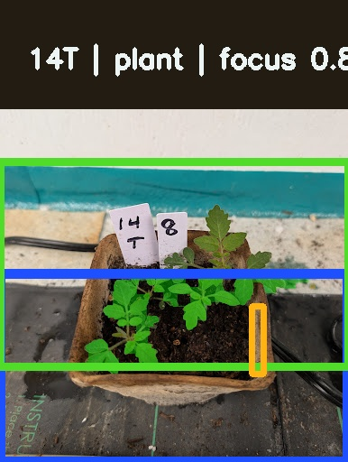
Crop 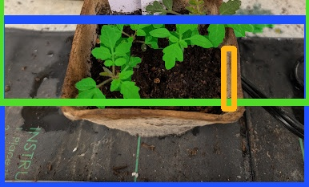
Priority 0.909
Queue Rank 2
Readiness high
Focus 0.883
Spill 0.7%
Coverage 10.5% Cleanest seed example. Trace the pot interior and target canopy as the reference style.
Original | Overlay | Crop | Annotate Crop
Overlay 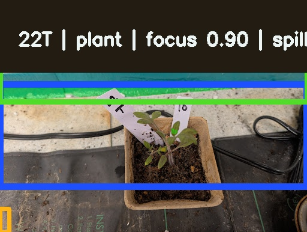
Crop 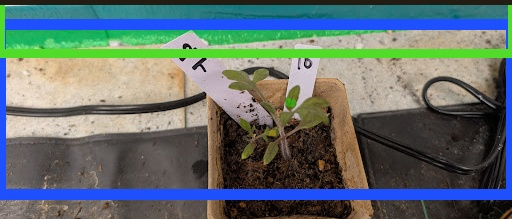
Priority 0.904
Queue Rank 1
Readiness high
Focus 0.896
Spill 0.5%
Coverage 8.7% Cleanest seed example. Trace the pot interior and target canopy as the reference style.
Original | Overlay | Crop | Annotate Crop
Seed 3
8T Iles Yellow Latvian Overlay 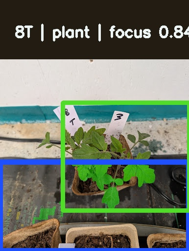
Crop 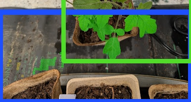
Priority 0.882
Queue Rank 3
Readiness high
Focus 0.844
Spill 2.6%
Coverage 10.7% Cleanest seed example. Trace the pot interior and target canopy as the reference style.
Original | Overlay | Crop | Annotate Crop
Overlay 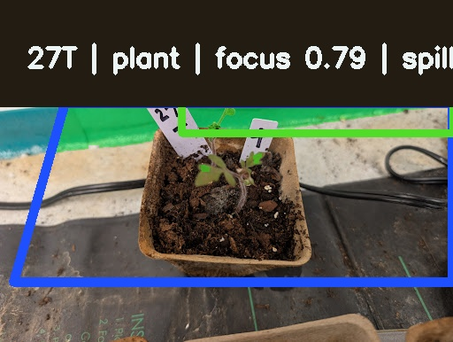
Crop 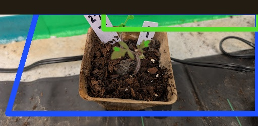
Priority 0.862
Queue Rank 4
Readiness high
Focus 0.788
Spill 0.0%
Coverage 11.9% Cleanest seed example. Trace the pot interior and target canopy as the reference style.
Original | Overlay | Crop | Annotate Crop
Overlay 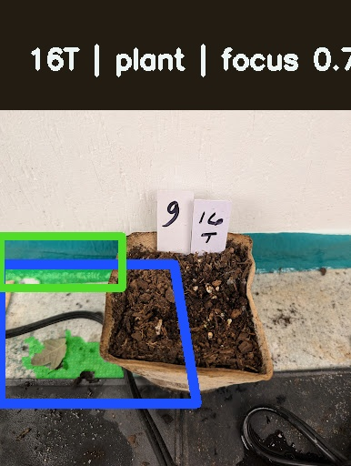
Crop 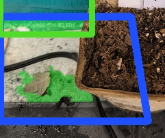
Priority 0.821
Queue Rank 6
Readiness high
Focus 0.724
Spill 0.0%
Coverage 17.0% Good seed example. Target canopy is usable with only minor edge ambiguity.
Original | Overlay | Crop | Annotate Crop
Overlay 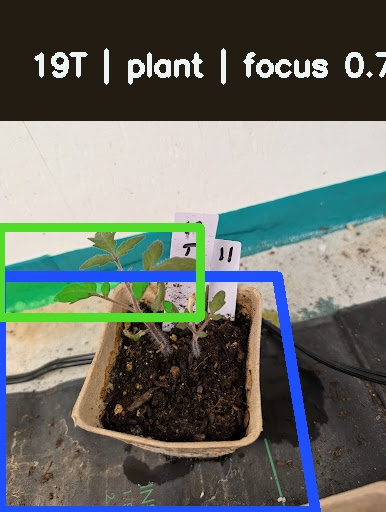
Crop 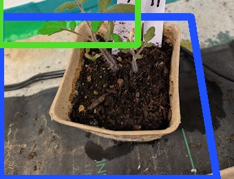
Priority 0.752
Queue Rank 5
Readiness high
Focus 0.732
Spill 6.7%
Coverage 5.1% Good seed example. Target canopy is usable with only minor edge ambiguity.
Original | Overlay | Crop | Annotate Crop
Seed 7
2T Nikolayev Yellow Cherry Overlay 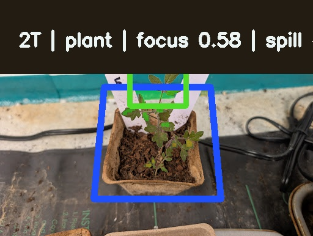
Crop 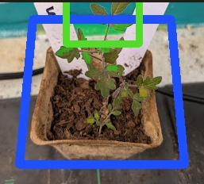
Priority 0.585
Queue Rank 7
Readiness moderate
Focus 0.578
Spill 31.4%
Coverage 4.5% Usable but not perfect. Keep the mask tight to the target pot and exclude obvious neighbor spill.
Original | Overlay | Crop | Annotate Crop
{kind=link}
{kind=link}
{kind=link}
{kind=link}
{kind=link}
{kind=link}
{kind=link}